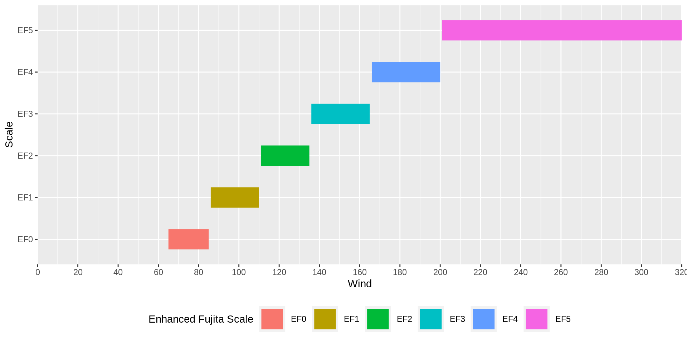
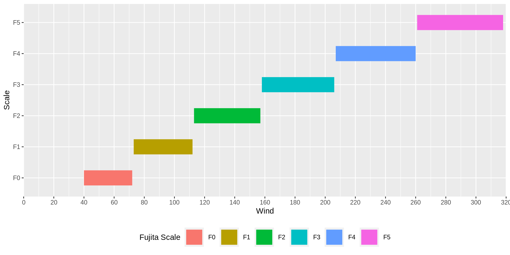
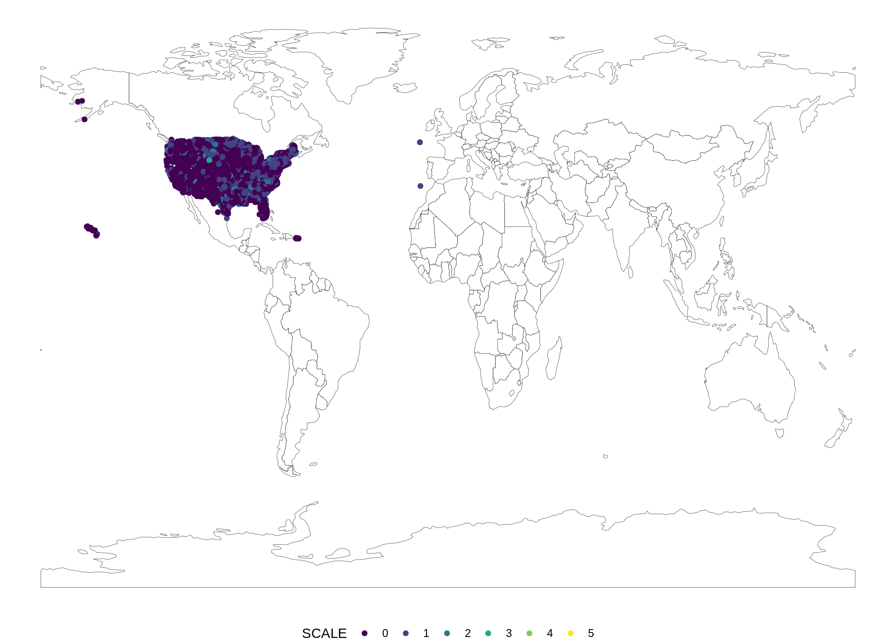
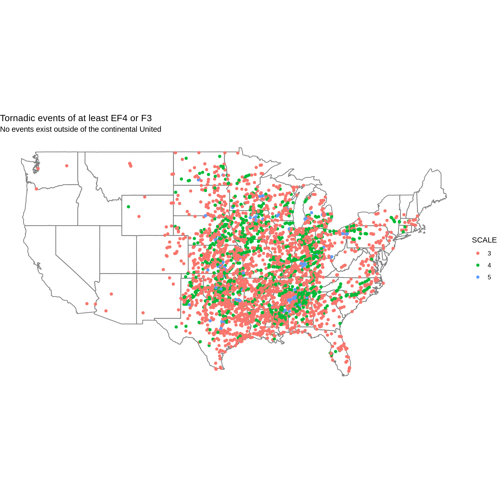
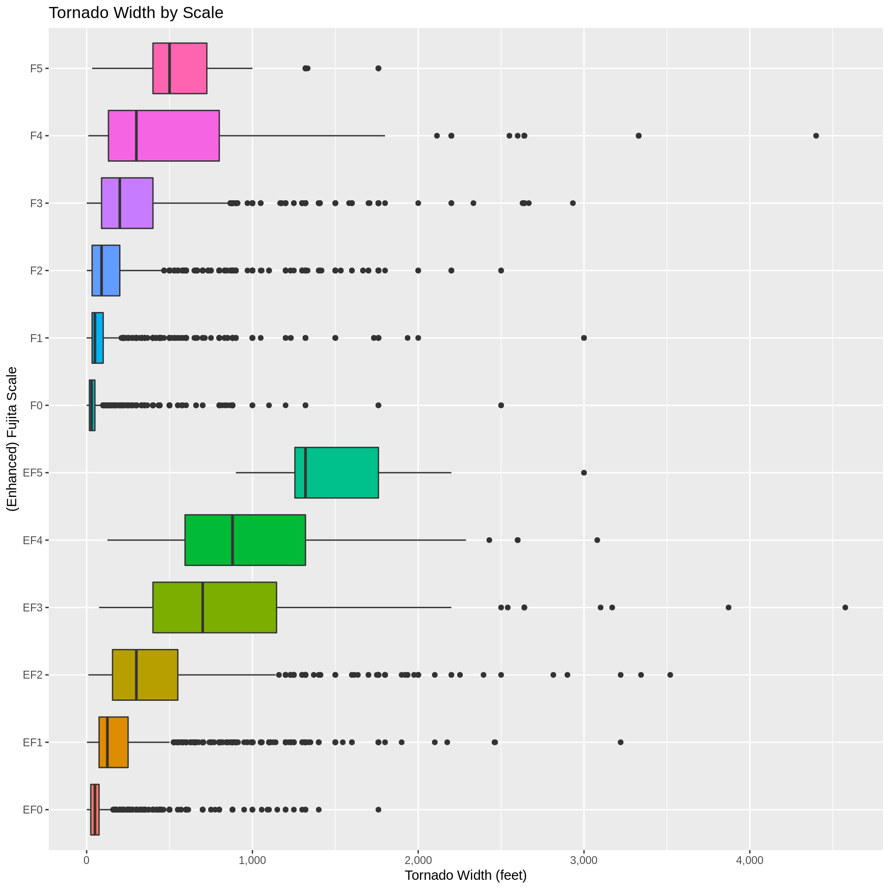
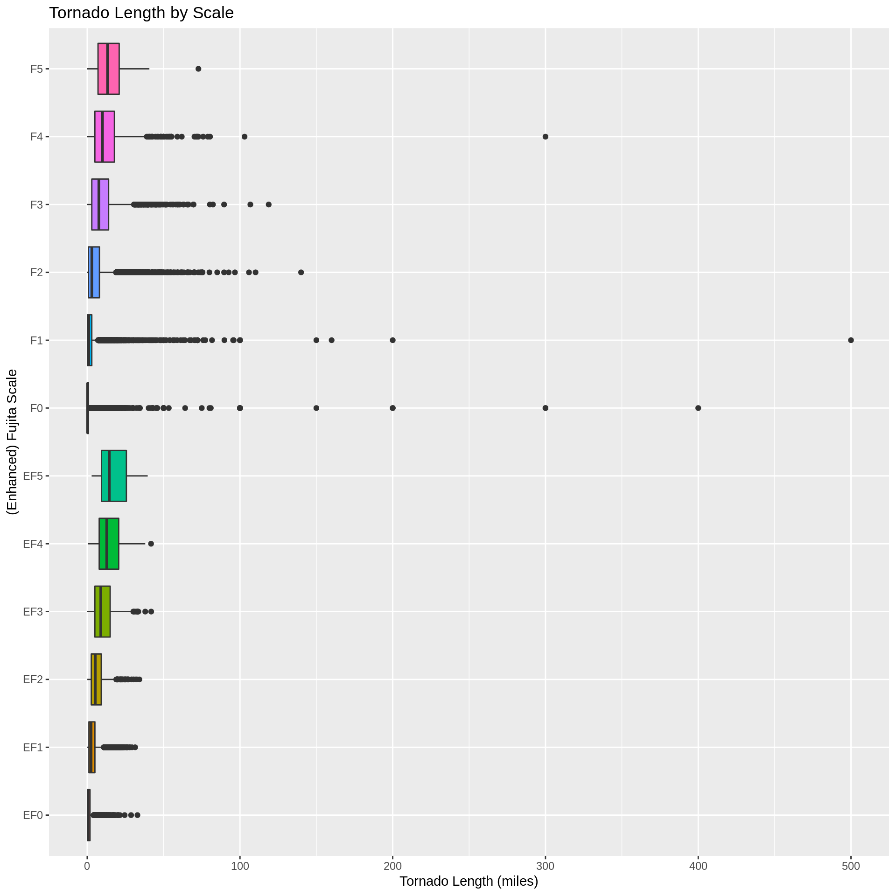
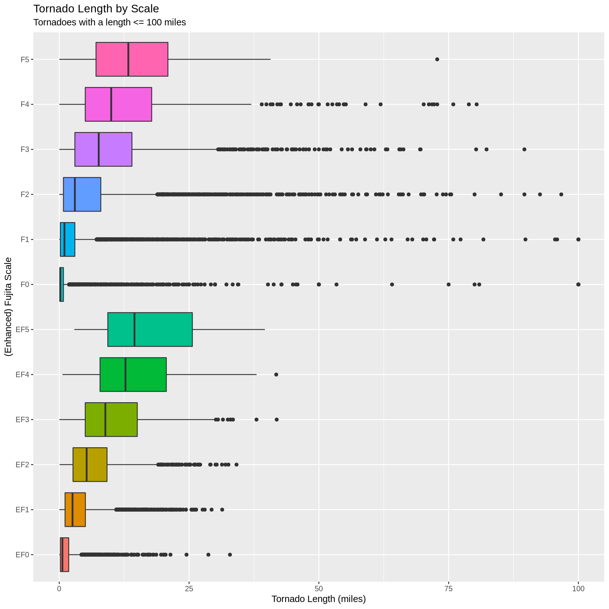

Last updated: 2019-03-03
Checks: 6 0
Knit directory: ncdc_storm_events/
This reproducible R Markdown analysis was created with workflowr (version 1.2.0). The Report tab describes the reproducibility checks that were applied when the results were created. The Past versions tab lists the development history.
Great! Since the R Markdown file has been committed to the Git repository, you know the exact version of the code that produced these results.
Great job! The global environment was empty. Objects defined in the global environment can affect the analysis in your R Markdown file in unknown ways. For reproduciblity it’s best to always run the code in an empty environment.
The command set.seed(20181114) was run prior to running the code in the R Markdown file. Setting a seed ensures that any results that rely on randomness, e.g. subsampling or permutations, are reproducible.
Great job! Recording the operating system, R version, and package versions is critical for reproducibility.
Nice! There were no cached chunks for this analysis, so you can be confident that you successfully produced the results during this run.
Great! You are using Git for version control. Tracking code development and connecting the code version to the results is critical for reproducibility. The version displayed above was the version of the Git repository at the time these results were generated.
Note that you need to be careful to ensure that all relevant files for the analysis have been committed to Git prior to generating the results (you can use wflow_publish or wflow_git_commit). workflowr only checks the R Markdown file, but you know if there are other scripts or data files that it depends on. Below is the status of the Git repository when the results were generated:
Ignored files:
Ignored: .Rproj.user/
Untracked files:
Untracked: analysis/figure/
Untracked: docs/
Unstaged changes:
Modified: .gitignore
Note that any generated files, e.g. HTML, png, CSS, etc., are not included in this status report because it is ok for generated content to have uncommitted changes.
These are the previous versions of the R Markdown and HTML files. If you’ve configured a remote Git repository (see ?wflow_git_remote), click on the hyperlinks in the table below to view them.
| File | Version | Author | Date | Message |
|---|---|---|---|---|
| Rmd | 94e33c4 | Tim Trice | 2019-03-03 | Add Tornadoes |
library(kableExtra)
library(tidyverse)details <-
read_csv(
file = here::here("./output/details.csv"),
col_types = cols(
.default = col_character(),
EPISODE_ID = col_integer(),
EVENT_ID = col_integer(),
STATE_FIPS = col_integer(),
CZ_FIPS = col_integer(),
BEGIN_DATE_TIME = col_datetime(format = ""),
END_DATE_TIME = col_datetime(format = ""),
INJURIES_DIRECT = col_integer(),
INJURIES_INDIRECT = col_integer(),
DEATHS_DIRECT = col_integer(),
DEATHS_INDIRECT = col_integer(),
DAMAGE_PROPERTY = col_number(),
DAMAGE_CROPS = col_number(),
MAGNITUDE = col_double(),
TOR_LENGTH = col_double(),
TOR_WIDTH = col_double(),
BEGIN_RANGE = col_integer(),
END_RANGE = col_integer(),
BEGIN_LAT = col_double(),
BEGIN_LON = col_double(),
END_LAT = col_double(),
END_LON = col_double()
)
)
bad_lon <-
filter(details, !between(BEGIN_LON, -180, 180) | !between(END_LON, -180, 180))tornado_scales <-
tibble(
EF_scale = c("EF0", "EF1", "EF2", "EF3", "EF4", "EF5"),
EF_wind = c("65-85", "86-110", "111-135", "136-165", "166-200", ">200"),
F_scale = c("F0", "F1", "F2", "F3", "F4", "F5"),
F_wind = c("40-72", "73-112", "113-157", "158-206", "207-260", "261-318")
)
tornado_scales %>%
kable() %>%
kable_styling(c("striped", "bordered")) %>%
add_header_above(c("Enhanced Fujita Wind Scale" = 2L, "Fujita Scale" = 2L))| EF_scale | EF_wind | F_scale | F_wind |
|---|---|---|---|
| EF0 | 65-85 | F0 | 40-72 |
| EF1 | 86-110 | F1 | 73-112 |
| EF2 | 111-135 | F2 | 113-157 |
| EF3 | 136-165 | F3 | 158-206 |
| EF4 | 166-200 | F4 | 207-260 |
| EF5 | >200 | F5 | 261-318 |
enhanced_fujita <-
tibble(
Wind = seq(65, 320, by = 1),
Scale = case_when(
between(Wind, 65, 85) ~ "EF0",
between(Wind, 86, 110) ~ "EF1",
between(Wind, 111, 135) ~ "EF2",
between(Wind, 136, 165) ~ "EF3",
between(Wind, 166, 200) ~ "EF4",
between(Wind, 200, 320) ~ "EF5",
)
)
fujita <-
tibble(
Wind = seq(40, 318, by = 1),
Scale = case_when(
between(Wind, 40, 72) ~ "F0",
between(Wind, 73, 112) ~ "F1",
between(Wind, 113, 157) ~ "F2",
between(Wind, 158, 206) ~ "F3",
between(Wind, 207, 260) ~ "F4",
between(Wind, 261, 318) ~ "F5",
)
)enhanced_fujita %>%
ggplot() +
aes(x = Wind, y = Scale, color = Scale) +
geom_line(size = 10) +
scale_x_continuous(
limits = c(0, 320),
breaks = seq(0, 320, by = 20),
minor_breaks = seq(0, 320, by = 10),
expand = c(0, 0)
) +
theme(legend.position = "bottom") +
guides(color = guide_legend(title = "Enhanced Fujita Scale", nrow = 1L))
fujita %>%
ggplot() +
aes(x = Wind, y = Scale, color = Scale) +
geom_line(size = 10) +
scale_x_continuous(
limits = c(0, 320),
breaks = seq(0, 320, by = 20),
minor_breaks = seq(0, 320, by = 10),
expand = c(0, 0)
) +
theme(legend.position = "bottom") +
guides(color = guide_legend(title = "Fujita Scale", nrow = 1L))
TOR_F_SCALE Valuesdetails %>%
filter(EVENT_TYPE == "Tornado") %>%
#' Remove bad latitude/longitude values
group_by(TOR_F_SCALE) %>%
summarise(n = n())# A tibble: 14 x 2
TOR_F_SCALE n
<chr> <int>
1 <NA> 1970
2 EF0 8428
3 EF1 5317
4 EF2 1546
5 EF3 444
6 EF4 103
7 EF5 14
8 EFU 108
9 F0 20769
10 F1 16922
11 F2 9022
12 F3 2897
13 F4 999
14 F5 124details %>%
filter(
EVENT_TYPE == "Tornado",
is.na(TOR_F_SCALE) | TOR_F_SCALE == "EFU"
) %>%
select(EPISODE_ID, EVENT_ID, EVENT_TYPE, TOR_F_SCALE, MAGNITUDE, MAGNITUDE_TYPE) %>%
group_by(TOR_F_SCALE, MAGNITUDE, MAGNITUDE_TYPE) %>%
summarise(n = n()) %>%
arrange(TOR_F_SCALE, MAGNITUDE, MAGNITUDE_TYPE, n) %>%
kable() %>%
kable_styling("striped")| TOR_F_SCALE | MAGNITUDE | MAGNITUDE_TYPE | n |
|---|---|---|---|
| EFU | NA | NA | 108 |
| NA | 0 | NA | 1966 |
| NA | 1 | NA | 2 |
| NA | 2 | NA | 2 |
Where TOR_F_SCALE is NA or equals “EFU”, there is no valuable data to correct this. The variable MAGNITUDE is used to mark the measured extent of wind speeds (or hail, in some cases) and MAGNITUDE_TYPE identifies how that observation was obtained. Both of these values are NA for “EFU” observations, and MAGNITUDE does not reflect valid wind speed values for a tornado where TOR_F_SCALE is NA.
With this, can make TOR_F_SCALE a NA_character_ value where TOR_F_SCALE is “EFU”.
details$TOR_F_SCALE[details$TOR_F_SCALE == "EFU"] <- NA_character_details %>%
filter(
EVENT_TYPE == "Tornado",
!is.na(TOR_F_SCALE)
) %>%
#' Remove observations with bad latitude/longitude values
setdiff(bad_lon) %>%
select(EVENT_TYPE, TOR_F_SCALE, BEGIN_LAT, BEGIN_LON) %>%
extract(
col = TOR_F_SCALE,
into = "SCALE",
regex = "^E*F([[:digit:]])$",
convert = TRUE,
remove = FALSE
) %>%
mutate(SCALE = fct_reorder(.f = as.character(SCALE), .x = SCALE)) %>%
ggplot() +
aes(
x = BEGIN_LON,
y = BEGIN_LAT,
color = SCALE
) +
geom_polygon(
data = rnaturalearth::countries110,
aes(x = long, y = lat, group = group),
fill = "white",
color = "black",
size = 0.1
) +
geom_point() +
coord_cartesian() +
guides(color = guide_legend(nrow = 1L)) +
viridis::scale_color_viridis(discrete = TRUE) +
# scale_color_brewer(palette = "Set1") +
theme_void() +
theme(legend.position = "bottom")Warning: Removed 1013 rows containing missing values (geom_point).
Where TOR_F_SCALE is “F*“, do we have valid MAGNITUDE values?
details %>%
filter(grepl("^F[[:digit:]]$", TOR_F_SCALE)) %>%
select(TOR_F_SCALE, MAGNITUDE) %>%
group_by(TOR_F_SCALE) %>%
summarise(
Min = min(MAGNITUDE),
Max = max(MAGNITUDE)
)# A tibble: 6 x 3
TOR_F_SCALE Min Max
<chr> <dbl> <dbl>
1 F0 NA NA
2 F1 NA NA
3 F2 NA NA
4 F3 NA NA
5 F4 NA NA
6 F5 NA NA…and “EF*“?
details %>%
filter(grepl("^EF[[:digit:]]$", TOR_F_SCALE)) %>%
select(TOR_F_SCALE, MAGNITUDE) %>%
group_by(TOR_F_SCALE) %>%
summarise(
Min = min(MAGNITUDE),
Max = max(MAGNITUDE)
)# A tibble: 6 x 3
TOR_F_SCALE Min Max
<chr> <dbl> <dbl>
1 EF0 NA NA
2 EF1 NA NA
3 EF2 NA NA
4 EF3 NA NA
5 EF4 NA NA
6 EF5 NA NASo, at least one record for each scale has a NA value.
Under the Enhanced Fujita Scale, tornadoes rated EF4 or higher (winds > 166mph) produce devastating damage. Corresponding to the Fujita Scale, this would be at least a F3.
Plot tornadic events produced by at least a F3 or EF4 tornado.
details %>%
filter(TOR_F_SCALE %in% c("F3", "F4", "F5", "EF4", "EF5")) %>%
setdiff(bad_lon) %>%
select(EVENT_TYPE, TOR_F_SCALE, BEGIN_LAT, BEGIN_LON) %>%
extract(
col = TOR_F_SCALE,
into = "SCALE",
regex = "^E*F([[:digit:]])$",
convert = TRUE,
remove = FALSE
) %>%
mutate(SCALE = fct_reorder(.f = as.character(SCALE), .x = SCALE)) %>%
ggplot() +
aes(
x = BEGIN_LON,
y = BEGIN_LAT,
color = SCALE
) +
borders("state") +
geom_point() +
coord_map() +
theme_void() +
labs(
title = "Tornadic events of at least EF4 or F3",
subtitle = "No events exist outside of the continental United"
)Warning: Removed 42 rows containing missing values (geom_point).
details %>%
filter(!is.na(TOR_WIDTH), !is.na(TOR_F_SCALE)) %>%
select(TOR_F_SCALE, TOR_WIDTH) %>%
ggplot() +
aes(x = TOR_F_SCALE, y = TOR_WIDTH, fill = TOR_F_SCALE) +
geom_boxplot() +
coord_flip() +
scale_y_continuous(
labels = scales::comma
) +
theme(legend.position = "none") +
labs(
title = "Tornado Width by Scale",
x = "(Enhanced) Fujita Scale",
y = "Tornado Width (feet)"
)
details %>%
filter(!is.na(TOR_LENGTH), !is.na(TOR_F_SCALE)) %>%
select(TOR_F_SCALE, TOR_LENGTH) %>%
ggplot() +
aes(x = TOR_F_SCALE, y = TOR_LENGTH, fill = TOR_F_SCALE) +
geom_boxplot() +
coord_flip() +
theme(legend.position = "none") +
labs(
title = "Tornado Length by Scale",
x = "(Enhanced) Fujita Scale",
y = "Tornado Length (miles)"
)
details %>%
filter(
!is.na(TOR_LENGTH),
!is.na(TOR_F_SCALE),
TOR_LENGTH <= 100
) %>%
select(TOR_F_SCALE, TOR_LENGTH) %>%
ggplot() +
aes(x = TOR_F_SCALE, y = TOR_LENGTH, fill = TOR_F_SCALE) +
geom_boxplot() +
coord_flip() +
theme(legend.position = "none") +
labs(
title = "Tornado Length by Scale",
subtitle = "Tornadoes with a length <= 100 miles",
x = "(Enhanced) Fujita Scale",
y = "Tornado Length (miles)"
)
devtools::session_info()─ Session info ──────────────────────────────────────────────────────────
setting value
version R version 3.5.2 (2018-12-20)
os Ubuntu 18.04.2 LTS
system x86_64, linux-gnu
ui X11
language (EN)
collate en_US.UTF-8
ctype en_US.UTF-8
tz America/Chicago
date 2019-03-03
─ Packages ──────────────────────────────────────────────────────────────
package * version date lib source
assertthat 0.2.0 2017-04-11 [1] CRAN (R 3.5.2)
backports 1.1.3 2018-12-14 [1] CRAN (R 3.5.2)
broom 0.5.1 2018-12-05 [1] CRAN (R 3.5.2)
callr 3.1.1 2018-12-21 [1] CRAN (R 3.5.2)
cellranger 1.1.0 2016-07-27 [1] CRAN (R 3.5.2)
class 7.3-15 2019-01-01 [1] CRAN (R 3.5.2)
classInt 0.3-1 2018-12-18 [1] CRAN (R 3.5.2)
cli 1.0.1 2018-09-25 [1] CRAN (R 3.5.2)
colorspace 1.4-0 2019-01-13 [1] CRAN (R 3.5.2)
crayon 1.3.4 2017-09-16 [1] CRAN (R 3.5.2)
DBI 1.0.0 2018-05-02 [1] CRAN (R 3.5.2)
desc 1.2.0 2018-05-01 [1] CRAN (R 3.5.2)
devtools 2.0.1 2018-10-26 [1] CRAN (R 3.5.2)
digest 0.6.18 2018-10-10 [1] CRAN (R 3.5.2)
dplyr * 0.8.0.1 2019-02-15 [1] CRAN (R 3.5.2)
e1071 1.7-0.1 2019-01-21 [1] CRAN (R 3.5.2)
evaluate 0.12 2018-10-09 [1] CRAN (R 3.5.2)
fansi 0.4.0 2018-10-05 [1] CRAN (R 3.5.2)
forcats * 0.3.0 2018-02-19 [1] CRAN (R 3.5.2)
fs 1.2.6 2018-08-23 [1] CRAN (R 3.5.2)
generics 0.0.2 2018-11-29 [1] CRAN (R 3.5.2)
ggplot2 * 3.1.0 2018-10-25 [1] CRAN (R 3.5.2)
git2r 0.24.0 2019-01-07 [1] CRAN (R 3.5.2)
glue 1.3.0 2018-07-17 [1] CRAN (R 3.5.2)
gridExtra 2.3 2017-09-09 [1] CRAN (R 3.5.2)
gtable 0.2.0 2016-02-26 [1] CRAN (R 3.5.2)
haven 2.0.0 2018-11-22 [1] CRAN (R 3.5.2)
here 0.1 2017-05-28 [1] CRAN (R 3.5.2)
highr 0.7 2018-06-09 [1] CRAN (R 3.5.2)
hms 0.4.2 2018-03-10 [1] CRAN (R 3.5.2)
htmltools 0.3.6 2017-04-28 [1] CRAN (R 3.5.2)
httr 1.4.0 2018-12-11 [1] CRAN (R 3.5.2)
jsonlite 1.6 2018-12-07 [1] CRAN (R 3.5.2)
kableExtra * 1.0.1 2019-01-22 [1] CRAN (R 3.5.2)
knitr 1.21 2018-12-10 [1] CRAN (R 3.5.2)
labeling 0.3 2014-08-23 [1] CRAN (R 3.5.2)
lattice 0.20-38 2018-11-04 [1] CRAN (R 3.5.2)
lazyeval 0.2.1 2017-10-29 [1] CRAN (R 3.5.2)
lubridate 1.7.4 2018-04-11 [1] CRAN (R 3.5.2)
magrittr 1.5 2014-11-22 [1] CRAN (R 3.5.2)
mapproj 1.2.6 2018-03-29 [1] CRAN (R 3.5.2)
maps * 3.3.0 2018-04-03 [1] CRAN (R 3.5.2)
memoise 1.1.0 2017-04-21 [1] CRAN (R 3.5.2)
modelr 0.1.2 2018-05-11 [1] CRAN (R 3.5.2)
munsell 0.5.0 2018-06-12 [1] CRAN (R 3.5.2)
nlme 3.1-137 2018-04-07 [1] CRAN (R 3.5.2)
pillar 1.3.1 2018-12-15 [1] CRAN (R 3.5.2)
pkgbuild 1.0.2 2018-10-16 [1] CRAN (R 3.5.2)
pkgconfig 2.0.2 2018-08-16 [1] CRAN (R 3.5.2)
pkgload 1.0.2 2018-10-29 [1] CRAN (R 3.5.2)
plyr 1.8.4 2016-06-08 [1] CRAN (R 3.5.2)
prettyunits 1.0.2 2015-07-13 [1] CRAN (R 3.5.2)
processx 3.2.1 2018-12-05 [1] CRAN (R 3.5.2)
ps 1.3.0 2018-12-21 [1] CRAN (R 3.5.2)
purrr * 0.2.5 2018-05-29 [1] CRAN (R 3.5.2)
R6 2.3.0 2018-10-04 [1] CRAN (R 3.5.2)
Rcpp 1.0.0 2018-11-07 [1] CRAN (R 3.5.2)
readr * 1.3.1 2018-12-21 [1] CRAN (R 3.5.2)
readxl 1.2.0 2018-12-19 [1] CRAN (R 3.5.2)
remotes 2.0.2 2018-10-30 [1] CRAN (R 3.5.2)
rlang 0.3.1 2019-01-08 [1] CRAN (R 3.5.2)
rmarkdown 1.11 2018-12-08 [1] CRAN (R 3.5.2)
rnaturalearth 0.1.0 2017-03-21 [1] CRAN (R 3.5.2)
rprojroot 1.3-2 2018-01-03 [1] CRAN (R 3.5.2)
rstudioapi 0.9.0 2019-01-09 [1] CRAN (R 3.5.2)
rvest 0.3.2 2016-06-17 [1] CRAN (R 3.5.2)
scales 1.0.0 2018-08-09 [1] CRAN (R 3.5.2)
sessioninfo 1.1.1 2018-11-05 [1] CRAN (R 3.5.2)
sf 0.7-3 2019-02-21 [1] CRAN (R 3.5.2)
sp 1.3-1 2018-06-05 [1] CRAN (R 3.5.2)
stringi 1.2.4 2018-07-20 [1] CRAN (R 3.5.2)
stringr * 1.3.1 2018-05-10 [1] CRAN (R 3.5.2)
tibble * 2.0.1 2019-01-12 [1] CRAN (R 3.5.2)
tidyr * 0.8.2 2018-10-28 [1] CRAN (R 3.5.2)
tidyselect 0.2.5 2018-10-11 [1] CRAN (R 3.5.2)
tidyverse * 1.2.1 2017-11-14 [1] CRAN (R 3.5.2)
units 0.6-2 2018-12-05 [1] CRAN (R 3.5.2)
usethis 1.4.0 2018-08-14 [1] CRAN (R 3.5.2)
utf8 1.1.4 2018-05-24 [1] CRAN (R 3.5.2)
viridis 0.5.1 2018-03-29 [1] CRAN (R 3.5.2)
viridisLite 0.3.0 2018-02-01 [1] CRAN (R 3.5.2)
webshot 0.5.1 2018-09-28 [1] CRAN (R 3.5.2)
whisker 0.3-2 2013-04-28 [1] CRAN (R 3.5.2)
withr 2.1.2 2018-03-15 [1] CRAN (R 3.5.2)
workflowr 1.2.0 2019-02-14 [1] CRAN (R 3.5.2)
xfun 0.4 2018-10-23 [1] CRAN (R 3.5.2)
xml2 1.2.0 2018-01-24 [1] CRAN (R 3.5.2)
yaml 2.2.0 2018-07-25 [1] CRAN (R 3.5.2)
[1] /usr/local/lib/R/site-library
[2] /usr/lib/R/site-library
[3] /usr/lib/R/library